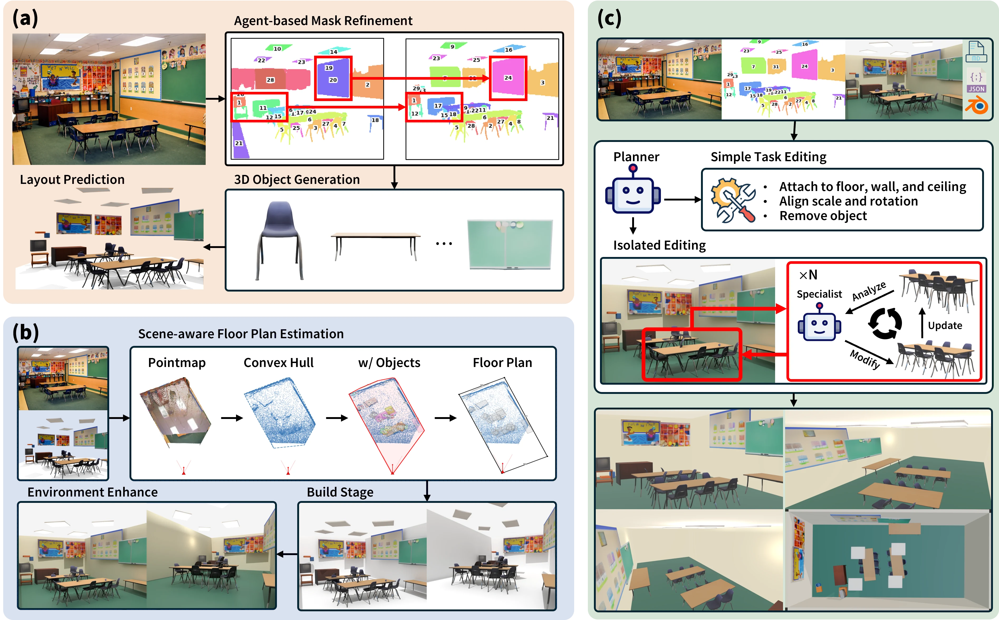
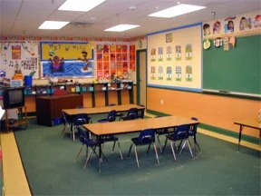
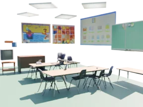
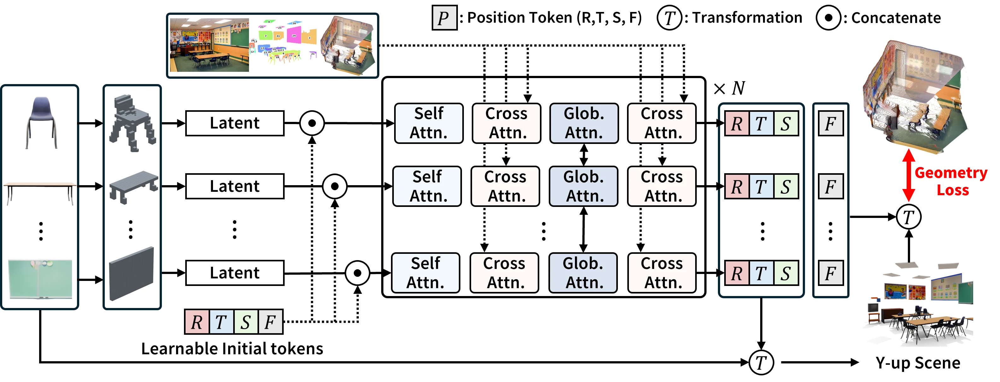

SceneConductor
3D Scene Generation from a Single Image with Multi-Agent Orchestration
TL;DR Our framework performs single-image 3D scene generation into three structured stages — scene initialization, environment construction, and multi-agent refinement — and introduce a geometry-aware layout predictor trained with sparse point-map priors, achieving consistent gains in geometric accuracy and perceptual realism.
Pipeline Overview

Results
Pick a scene from the gallery below, then toggle through Stage 1 → 2 → 3 to see how SceneConductor reconstructs a complete 3D environment from a single image. All three stages are interactive


Geometry-Aware Layout Predictor
Supervised by sparse geometric priors derived from point maps, enabling training from segmentation-level data without scene-level layout annotations.

Qualitative Comparison
Same input photo reconstructed by prior methods vs. our Geometry-aware Layout Predictor. Ours is interactive
BibTeX
@article{kim2026sceneconductor,
title = {SceneConductor: 3D Scene Generation from a Single Image with Multi-Agent Orchestration},
author = {Kim, Jeonghwan and Lan, Yushi and Chen, Yongwei and Nguyen, Hieu Trung and Pan, Chuanyu and Pan, Xingang},
journal = {arXiv preprint arXiv:2606.08402},
year = {2026}
}